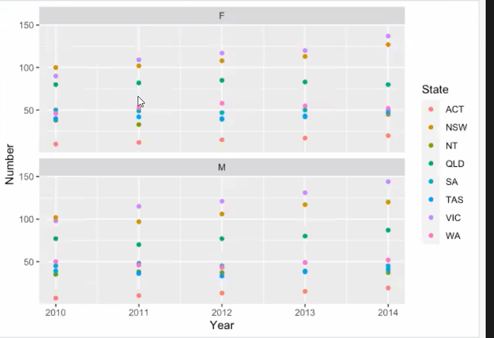

Week2 -- ggplot2
常用函数：
• geom_bar(): creates a layer with bars representing different statistical properties.
• geom_point(): creates a layer showing the data points (as you would see on a scatterplot).
• geom_line(): creates a layer that connects data points with a straight line.
• geom_smooth(): creates a layer that contains a ‘smoother’ (i.e., a line that summarizes the
data as a whole rather than connecting individual data points).
• geom_histogram(): creates a layer with a histogram on it.
• geom_boxplot(): creates a layer with a box–whisker diagram.
• geom_text(): creates a layer with text on it.
• geom_density(): creates a layer with a density plot on it.
• geom_errorbar(): creates a layer with error bars displayed on it.
• geom_hline(), geom_vline(): straight lines
读取ggplot
require(ggplot2) # load ggplot2 first 一般不用
library(ggplot2)
ggplot里面aes坐标轴，ggplot是坐标系和画布
gem_point()则是数据点加到图上,里面的aes就是把sex用不同形状，state不用颜色
facet_wrap() 按照Sex分成多个子图；若按多个元素分成子图，则用facet_grid(Sex~State)
ggplot(myData, aes(Year, Number)) + geom_point(aes(shape = Sex, color = State))
+facet_wrap(~Sex)

这里的shape表示点的样式，可以输入其他数字换样式
plot1 <- ggplot(dat, aes(x = CPI, y = HDI, color = Region)) + geom_point(shape = 1)
在图上加Label
labels <- c("Congo", "Sudan", "Afghanistan", "Greece", "China",
"India", "Rwanda", "Spain", "France",
"United States", "Japan", "Norway", "Singapore")
plot2 <- plot1 +
geom_text(aes(label = Country),
color = "black", size = 3, hjust = 1.1,
data = dat[dat$Country %in% labels, ])
在图上加回归线（Regression line）
plot3 <- plot2 +
geom_smooth(aes(group = 1),
method = "lm",
color = "black",
formula = y~ poly(x, 2),
se = FALSE)